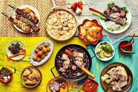

A cultura brasileira, assim como a formação étnica do povo brasileiro, é vasta e diversa. Nossos hábitos culturais receberam elementos e influências de povos indígenas, africanos, portugueses, espanhóis, italianos e japoneses, entre outros, devido à colonização, à imigração e aos povos que já habitavam aqui.
Historia
Os costumes brasileiros são variados. Tratando de termos morais, a nossa influência toma como base, principalmente, a moral judaico-cristã. O cristianismo constitui a maior influência para a formação de nosso povo, principalmente pela vertente católica, que compõe o maior grupo religioso brasileiro. Também sofremos influências morais de outros povos que vieram para o Brasil por meio dos fluxos migratórios, como os africanos.
A diversidade de hábitos e costumes morais também se deu por conta dos regionalismos que foram surgindo ao longo do tempo. Por possuir um território de proporções continentais, o Brasil viu, ao longo de sua história, o desenvolvimento de diferentes vertentes culturais, devido às diferenças geográficas que separam o território.
Pensando em termos culinários (a culinária é um valioso elemento cultural de um povo), temos pratos típicos e ingredientes que provêm da cultura indígena, dos estados nordestinos e do Centro-Oeste brasileiro, por exemplo. Enquanto vatapá e acarajé são pratos típicos baianos de origem africana, os habitantes do Cerrado consomem pequi, e a culinária tradicional paulista é fortemente influenciada pela culinária portuguesa e italiana.
culinária

A culinária do Brasil é fruto de uma mistura de ingredientes europeus, indígenas e africanos.[10] Muitos dos componentes das receitas e técnicas de preparo são de origem indígena, tendo sofrido modificações por parte dos portugueses e dos escravos oriundos da África. Esses faziam adaptações dos seus pratos típicos substituindo os ingredientes que faltassem por correspondentes locais. A feijoada à brasileira, prato típico do país, é um exemplo disso.[11] Os escravos trazidos ao Brasil desde meados do século XVI somaram à culinária nacional elementos como o azeite de dendê e o cuscuz. E as levas de imigrantes recebidas pelo país entre os séculos XIX e XX, vindos em grande número da Europa, trouxeram algumas novidades ao cardápio nacional e concomitantemente fortaleceram o consumo de diversos ingredientes.
A alimentação diária, feita em três refeições, envolve o consumo de café com leite, pão, frutas, bolos e doces no café da manhã, feijão com arroz no almoço — refeição básica do brasileiro, aos quais são somados, por vezes, o macarrão, a carne, a salada e a batata — e, no jantar, sopas e também as várias comidas regionais.
As bebidas destiladas foram trazidas pelos portugueses ou, como a cachaça, fabricadas na terra. O vinho é também muito consumido, por vezes somado à água e açúcar, na conhecida sangria. A cerveja por sua vez começou a ser consumida em fins do século XVIII e é hoje uma das bebidas alcoólicas mais comuns.
As culinárias regionais mais visíveis pertencem aos estados de Minas Gerais e Bahia, sendo a culinária mineira marcada pela influência europeia em iguarias e laticínios como o feijão tropeiro (também um prato da cozinha paulista), o pão de queijo (que equivale à chipa paraguaia, diferindo no formato) e o queijo de minas frescal, e a culinária baiana pela presença de quitutes africanos como o acarajé, o abará e o vatapá. Já a culinária de Pernambuco destaca-se pela chamada "doçaria pernambucana", ou seja, os doces desenvolvidos durante os períodos colonial e imperial nos seus engenhos de açúcar como o bolo de rolo, o bolo Souza Leão e a cartola, e também pelas bebidas e iguarias salgadas descobertas ou provavelmente originadas no estado a exemplo da cachaça, do beiju e da feijoada à brasileira
Musica
A culinária do Brasil é fruto de uma mistura de ingredientes europeus, indígenas e africanos.[10] Muitos dos componentes das receitas e técnicas de preparo são de origem indígena, tendo sofrido modificações por parte dos portugueses e dos escravos oriundos da África. Esses faziam adaptações dos seus pratos típicos substituindo os ingredientes que faltassem por correspondentes locais. A feijoada à brasileira, prato típico do país, é um exemplo disso.[11] Os escravos trazidos ao Brasil desde meados do século XVI somaram à culinária nacional elementos como o azeite de dendê e o cuscuz. E as levas de imigrantes recebidas pelo país entre os séculos XIX e XX, vindos em grande número da Europa, trouxeram algumas novidades ao cardápio nacional e concomitantemente fortaleceram o consumo de diversos ingredientes.
A alimentação diária, feita em três refeições, envolve o consumo de café com leite, pão, frutas, bolos e doces no café da manhã, feijão com arroz no almoço — refeição básica do brasileiro, aos quais são somados, por vezes, o macarrão, a carne, a salada e a batata — e, no jantar, sopas e também as várias comidas regionais.
As bebidas destiladas foram trazidas pelos portugueses ou, como a cachaça, fabricadas na terra. O vinho é também muito consumido, por vezes somado à água e açúcar, na conhecida sangria. A cerveja por sua vez começou a ser consumida em fins do século XVIII e é hoje uma das bebidas alcoólicas mais comuns.
As culinárias regionais mais visíveis pertencem aos estados de Minas Gerais e Bahia, sendo a culinária mineira marcada pela influência europeia em iguarias e laticínios como o feijão tropeiro (também um prato da cozinha paulista), o pão de queijo (que equivale à chipa paraguaia, diferindo no formato) e o queijo de minas frescal, e a culinária baiana pela presença de quitutes africanos como o acarajé, o abará e o vatapá. Já a culinária de Pernambuco destaca-se pela chamada "doçaria pernambucana", ou seja, os doces desenvolvidos durante os períodos colonial e imperial nos seus engenhos de açúcar como o bolo de rolo, o bolo Souza Leão e a cartola, e também pelas bebidas e iguarias salgadas descobertas ou provavelmente originadas no estado a exemplo da cachaça, do beiju e da feijoada à brasileira